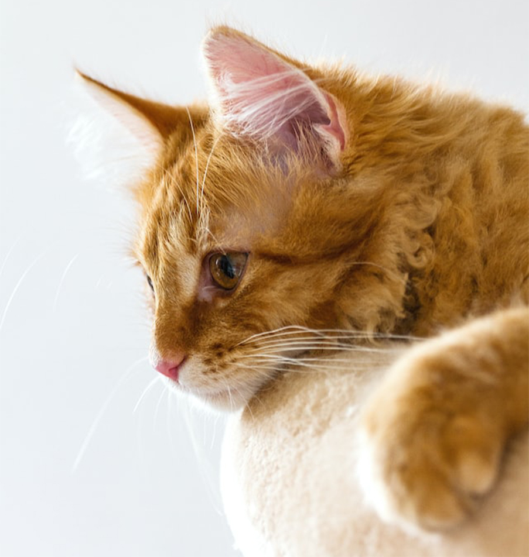

01.
MAINE COON
- The Maine Coon is a large domesticated cat breed. It is one of the oldest natural breeds in North America. The breed originated in the U.S. state of Maine, where it is the official state cat.
- The breed was popular in cat shows in the late 19th century, but its existence became threatened when long-haired breeds from overseas were introduced in the early 20th century. The Maine Coon has since made a comeback and is now the third most popular pedigreed cat breed in the world.
- The Maine Coon is a large and social cat, which could be the reason why it has a reputation of being referred to as "the gentle giant." The Maine Coon is predominantly known for its size and dense coat of fur which helps the large feline to survive in the harsh climate of Maine, the state from which they originated. The Maine Coon is often cited as having "dog-like" characteristics.
PHOTO GALLERY

02.

HEALTH
- Pet insurance data obtained from a study during years 2003–2006 in Sweden puts the median lifespan of the Maine Coon at > 12.5 years. 74% lived to 10 years or more and 54% lived to 12.5 years or more. Maine Coons are generally a healthy and hardy breed that is adapted to survive the challenging climate of New England. The most severe threat is feline hypertrophic cardiomyopathy (HCM), the most common heart disease seen in cats, whether purebred or not. In Maine Coons, it is thought to be inherited as an autosomal dominant trait. Middle-aged to older cats and males are thought to be predisposed to the disease. HCM is a progressive disease and can result in heart failure, paralysis of the hind legs due to clot embolization originating in the heart, and sudden death.
03.
MORE CAT
04.